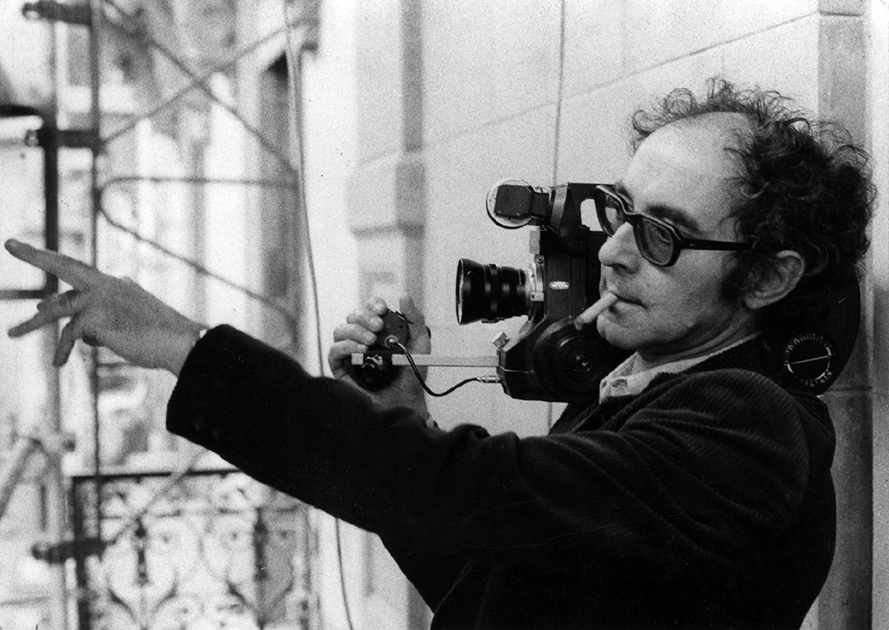

Un cinéma en crise
Au début des années 1950, le cinéma occidental est en crise. Les spectateurs désertent peu à peu les salles à cause de nouveaux modes de vie et de consommation et surtout de l'apparition de la télévision. Les département hollywoodiens ferment quasiment tous de 1960 à 1980 et leurs spécialistes doivent redevenir polyvalent, travaillant film par film. En France, alors que les caméras se font plus légères, la Nouvelle vague rejette le tournage en studio, auquel sont liés les effets spéciaux. Ces derniers trouvent d'autres débouchés à la télévision, tandis que les sociétés de production hollywoodiennes tentent de lutter contre cette concurrence en entrant dans une ère de surenchère.
Plus tard, dans les années 1960, le film Bonnie and Clyde ouvre la voie vers le fin de l'autocensure hollywoodienne. Les effets spéciaux doivent s'adapter à ce changement lié aux changements socio-culturels. Il faut reconstituer le sang, les impacts de balle... le cinéma gore se développe également en parallèle. C'est une période de transition du cinéma.
Le retour du cinéma relief
Le relief a existé dès les premières caméras, depuis les visionneuses comme le stéréoscope en 1839 ou les anaglyphes en 1858 utilisant des lunettes rouge et cyan, aux essais de film anaglyphes dès 1915. En 1935, les frères Lumière tournent un film en relief à l'aide de lunettes jaune et magenta. Dans les années 30, une autre technique utilisant des filtres polarisants se développe et est plus adaptée à l'arrivée de la couleur. Mais le véritable essor du cinéma alors appelé "3D" se fait au début des années 1950 quand il devient un atout dans la lutte contre le petit écran. L'Étrange Créature du lac noir de 1954 est souvent considéré à tort comme le premier film relief, mais il est le premier à s'inscrire dans cette époque de lutte. Son réalisateur Jack Arnold est un spécialiste des films de série B, dont le principe consiste à offrir au spectateur une première partie au film de série A, pour lequel il a payé son ticket d'entrée. Ces séries B doivent être réalisées à peu de frais.
Les débuts de l'art vidéo
Au milieu des années 1950, Jean-Christophe Averty, réalisateur pour la télévision française, crée de nombreux programmes dans lesquels il teste les possibilités de l'image vidéo, multipliant les effets d'incrustation multiples. En 1963, l'émission Les Raisins verts est déjà marquée par ce style, fait de nombreuses mises en abyme (image dans l'image) et d'incrustations. L'adaptation d'Ubu roi en 1965 met en images les décalages du texte d'Alfred Jarry. Pour ce faire, Averty crée un univers rempli de personnages de tailles diverses, répartis dans différentes parties de l'image, découpant et redistribuant allègrement l'espace traditionnel du plan. Souvent vu comme un précurseur de l'art vidéo, Averty offre aux effets spéciaux une place de choix à la télévision, place qui se confirmera avec l'arrivée des outils numériques dans les années 1990 et leur usage en publicité, clip, habillage d'émissions, jeu télé, etc.
Jean-Luc Godard avec une caméra AATON.
L'étrange créature du lac noir, Jack Arnold, 1954.
Ubu Roi, Alfred Jarry, 1965.